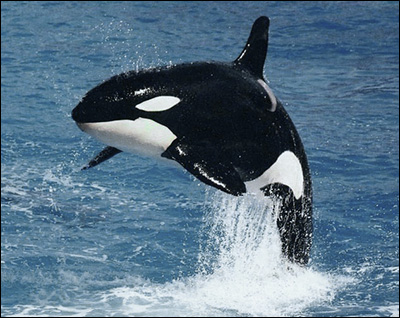

不要去SeaWorld 很多人喜欢海洋动物，比如海豚和“杀人鲸”（orca），但是我建议不要去海洋世界看它们。海豚和杀人鲸都是有灵性的，跟人类的智慧很接近，而且对人极其友好的动物。“杀人鲸”名字吓人，但是其实根本不吃人，野生的杀人鲸从来没有伤过人。 事实是，像SeaWorld之类的所谓“海洋世界”，无情的把这些动物绑架，把它们从小与自己的父母分离。在SeaWorld里，这些动物如同坐牢。住的，吃的，都比它们原来的生活差很多，更是没有父母的关爱，兄弟姐妹的温暖。本来可以活上百年的杀人鲸，在SeaWorld里只能活一二十年。 花钱去SeaWorld之类的地方，等同于给绑架者送钱，请不要再带着小孩子去赞助这些绑架者了！如果你真的爱这些动物，请坐船去海里拜访他们吧。如果你还不明白我在说什么，建议你看看一些关于杀人鲸的片子，比如《Blackfish》和《Free Willy》。 |